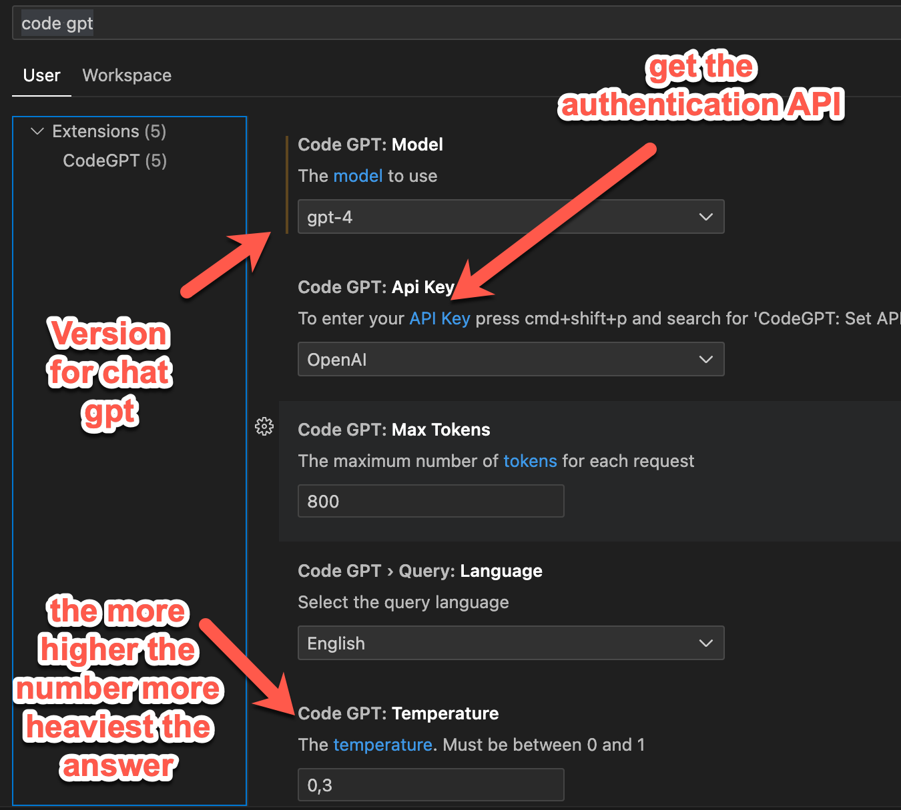
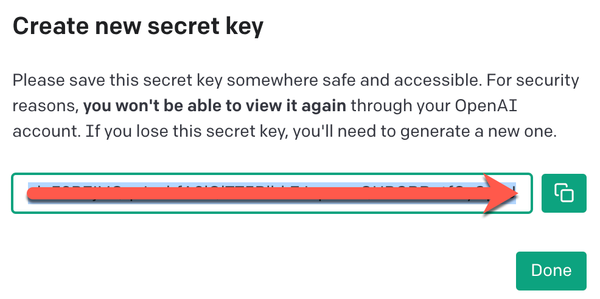
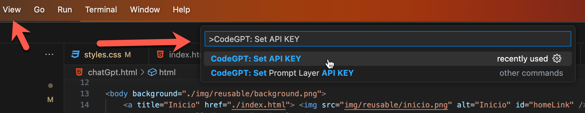
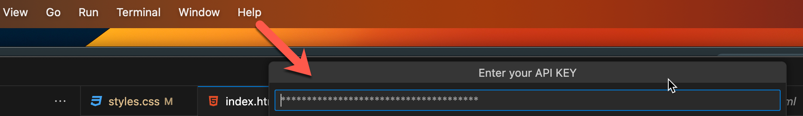
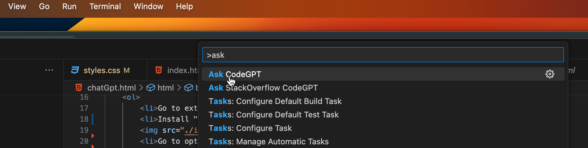

How to Install chat GPT in visual code
- Go to extension options in visual code
- Install "code GPT" extension (official openAI)

- Go to options/settings

- Search for "code gpt" for configurations

- Get the API in the API key link

- Login openAI and create the new key
- Add a key name and you will generate the API Key, copy the key

- open a new command palette view/command palette
- Search for CodeGPT: set API KEY

- Paste the API key and reload visual code

- Search for "ask GPT" and ask for a code inside the page that you want to create or modify the code
